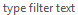

Projects Page


Projects Page |
|
The primary purpose of the project page is to create or update a workspace with one or more specific project streams.
The page contains the following controls:
|  | Filters which of the projects are displayed. |
| Adds a project to the <User> project of selected project catalog. If the <User> project is empty, it's not displayed in the tree, but you can still add a project to the catalog, and then it will be displayed. | |
| Removes the selected project from the<<User> project. It is only enabled for a project within a <User> project. | |
| Collapses the tree; initially the tree roots are expanded. | |
 |
Updates the locally-cached versions of all the resources used in the wizard. |
| Chooses which of the project catalogs available in the index to display. | |
Displays the selected project catalogs.
Double-clicking a project automatically adds its stream to the table of chosen streams,
or, if one of its streams is already in the table of chosen streams,
removes that stream from the table.
The project of each chosen stream is shown in bold font.
Only a project with at least one stream can be added to the table of chosen streams.
For projects without streams,
presumably projects that contain only nested projects,
given that completely empty projects are not displayed in the tree,
double-clicking expands or collapses the project's tree item.
|
|
| Adds the steams of the selected projects of the tree to the table of chosen streams. | |
| Removes the selected streams from the table of chosen streams, and leaves their corresponding projects selected in the tree. | |
| Displays the chosen streams. Double clicking a stream removes that stream from the table and leaves its corresponding project selected in the tree. The stream column supports cell editing: use the cell editor's down-down to choose which stream of the project's available streams to provision. | |
| Determines whether any streams are to be provisioned. This control is visible only in the install wizard. When enabled, any selected streams are removed from the table and the wizard's next button is enabled to proceed without choosing any streams to provision. |